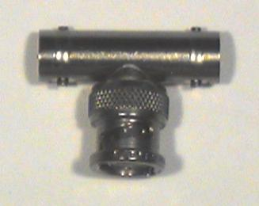

ELEC 243 Labs
Lab Home
Home
Introduction
Lab Station Handbook
Tools and Resources
VirtualBench
References
Patch Cords and Cables
The Breadboard
The Interface Modules
Wiring
Resistor Color Codes
Lab Report
Instruction Manuals and Data Sheets
Lab 1
Home
Safety
Background
DC Measurements: the DMM
Plotting Data in Matlab
Grounds and Grounding
The Oscilloscope and Function Generator
Cleaning Up
Lab 2
Home
Introduction
Before Lab
Measuring Heat and Light
The Breadboard
Electroacoustic Transducers II
Optoelectronic Signal Sources and Sinks
Lab 3
Home
Introduction
Background
Voltage and Waveform Measurements
Writing a Labview Program
Lab 4
Home
Introduction
Labview as a Source of Signals
Improved Resistance Measurement
Lab 5
Home
Introduction
The 741 Op-Amp
Voltage Amplifiers
Lab 6
Home
Introduction
Transducer Amplifiers
Frequency Response
Lab 7
Home
Introduction
Sampling and Quantization
Recording a Reference Signal
Signal Processing in Matlab
Lab 8
Home
Introduction
Digital Logic
Final Lab
Miscellanous Images
Home
Miscellanous Images
Banana Adapter
BNC T
741 Op-Amp
BNC Cliplead
VB Probe
DIN8
Photo Diode
Red LED
Ceramic Caps2
IC Puller
Banana Plug Patch Cords
Battery Pack
BNC Patch Cables
DAQ Cable
ELEC 243 Labs
Docs
»
Miscellanous Images »
Home
Miscellanous Images
Banana Adapter
BNC T

741 Op-Amp
BNC Cliplead
VB Probe
DIN8
Photo Diode
Red LED
Ceramic Caps2
IC Puller
Banana Plug Patch Cords
Battery Pack
BNC Patch Cables
DAQ Cable
« Previous